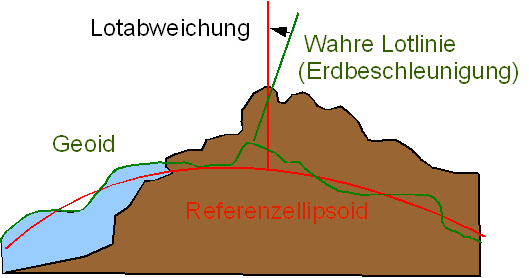
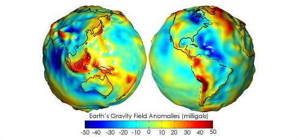
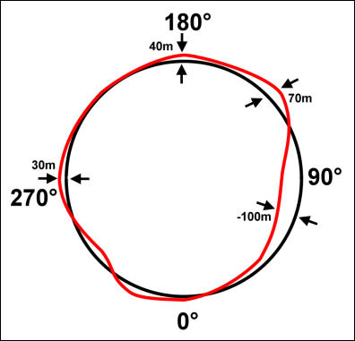
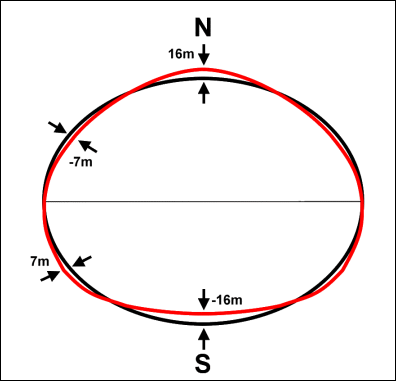
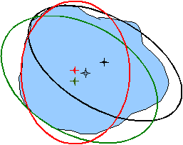

Das geodätische Datum

Bei einer kleinräumigen Betrachtungsweise ist die Genauigkeit einer auf ein Referenzellipsoid bezogenen Koordinatenbestimmung völlig ausreichend. Spannend ist, dass erst mit der Entwicklung von interkontinentalen Raketen in der ersten Hälfte des 20. Jhds. eine neue Dimension der Genauigkeit für die praktische Anwendung angestrebt wurde. In der Anwendung ist nämlich eine senkrechte Projektion auf das Ellipsoid unmöglich. Die senkrechte Projektion auf das auf Meeresniveau angenäherte Ellipsoid weicht um die sogenannte Lotabweichung von der wirklichen Senkrechten, wie sie durch ein gravitatives Schnurlot dargestellt wird, ab. Bei Vermessungen, die genauer sein sollen als etwa 0,5 Meter/1000 Meter (z.B. zur Berechnung der Ballistik von Interkontinentalraketen oder der Kontinentaldrift...), muss dieser Effekt berücksichtigt werden und die Messungen korrigieren zu können (Abb. 32).

Das Referenzmodell für die sich räumlich (und auch zeitlich) unterschiedlich ausprägende Schwere der Erde ist ein sogenanntes Geoid. Abbildung 11 visualisiert stark überhöht und farblich hervorgehoben diese Schwereanomalien (Abb. 33).

Für genaue Messungen oder möglichst exakte Kartenprojektionen müssen beide Bezugskörper, das Ellipsoid und das Geoid, berücksichtigt werden. Abb. 32 und 33 zeigen die konzeptuellen Probleme bei der Berücksichtigung des Geoids und des Referenzellipsoids für eine exakte Berechnung von Koordinaten. In der klassischen Vermessungstechnik wird hierzu, möglichst im Zentrum des abzubildenden Erdausschnittes, ein Referenzpunkt gesetzt (Fundamentalpunkt), der zusammen mit dem Referenzellipsoid das sogenannte geodätische Datum ergibt.

Das geodätische System
Seit der Satellitenvermessung mit Globalen Positionierungssystemen (GPS) sind allerdings derart viele, unabhängige Messungen bezogen auf die reale Erdgestalt verfügbar, dass nicht länger vom geodätischen Datum gesprochen wird sondern vom geodätischen System.
Das World Geodetic System 1984 (WGS 84) ist derzeit das am meisten verwendete geodätische Referenzsystem und dient als einheitliche Grundlage für Positionsangaben auf der Erde und im erdnahen Weltraum. Geodätische Systeme sind, anders als geodätische Datums, global konstruiert und bestehen aus dem Referenzellipsoid, dem eingemessenen Geoid, und zwölf Fundamentalstationen, über die der Bezug zur Erdkruste über zeitabhängige Koordinaten bestimmt wird.
Betrachten Sie die Abbildung 36. Sie zeigt schematisch (zweidimensional) die Verschiebungen von Referenzellipsoiden bezogen auf das Geoid / wahre Erdoberfläche. Die Sterne markieren den Mittelpunkt des jeweiligen Körpers. Versuchen Sie sich zu verdeutlichen welche Parameter notwendig sind um diese Verschiebung durchzuführen.

Abbildung 36: Verschiebungen von Referenzellipsoiden bezogen auf das Geoid/wahre Erdoberfläche (GIS.MA 2009)Bearbeiten Sie...
- Drucken sie sich die obige Abbildung aus und konstruieren mit Lineal und Stift die notwendigen Verschiebungen